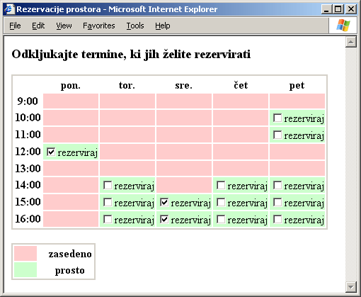

Utrjujemo snov 6. poglavja
Vprašanja z izbiro
- S katerim elementom ustvarimo gumb za odpošiljanje obrazca?
- input
- submit
- reset
- mailto
- S katero lastnostjo povežemo več izbirnih gumbov v skupino?
- name
- id
- value
- type
- S katerim elementom ustvarimo potrditveno polje?
- input
- checkbox
- radio
- reset
- Kako pravilno ustvarimo gumb z napisom "Briši", ki bo povrnil vsebino obrazca v začetno stanje?
- <input type="reset" value="Briši" />
- <input type="reset">Briši</input>
- <input type="submit" value="Briši" />
- <input type="submit">Briši</input>
- Kateri element lahko vstavimo direktno v element select ?
- option
- input
- radio
- checkbox
- V nekem obrazcu imamo element <input type="checkbox" checked="checked" id="ekstra" /> Kakšen zapis bo element povzročil v odposlanem dokumentu, če uporabnik pred odpošiljanjem obrazca ni ničesar spreminjal?
- ekstra=
- ekstra=on
- ekstra=checked
- Nič od naštetega.
- Kako vpišemo začetno besedilo urejevalnega polja (element textarea)?
- Kot njegovo vsebino.
- Prek lastnosti value.
- Prek lastnosti name.
- Začetne vsebine ne moremo vpisati.
- Kako ustvarimo polje za vnos krakega besedila z že vpisanim besedilom "Zdravo!"?
- <input type="text" id="pozdrav" value="Zdravo" />
- <input type="text" id="pozdrav">"Zdravo"</input>
- <input type="text" id="pozdrav" name="Zdravo" />
- <input type="text" id="Zdravo" />
- Kako ustvarimo seznam v obliki poteznega menija z možnostjo izbire le ene možnosti?
- <select size="1" multiple="off">...</select>
- <select>...</select>
- <select size="1" multiple="multiple">...</select>
- <select size="0">...</select>
- Kakšnega tipa je element input?
- Prazen in blokovski.
- Prazen in vrstičen.
- Z vsebino in blokovski.
- Z vsebino in vrstičen.
V razmislek
Izdelajte (statičen) prikaz spletne strani, ki bo vsebovala urnik za neko predavalnico z možnostjo rezervacije še nezasedenih terminov. Urnik naj za vsako prosto uro prikazuje potrditveno polje, ki ga je možno klikniti. Takole naj izgeda stran:

Stran dopolnite tako, da bo možno zahtevek za rezervacijo poslati na nek e-poštni naslov. V poslanem dokumentu morajo biti jasno razvidni termini, ki jih je uporabnik rezerviral.
Z znanjem, ki ga imamo, ni možno izdelati dinamične strani, ki bo avtomatično zabeležila rezervacijo in ob naslednjem nalaganju prikazala novo stanje. Za to potrebujemo nek strežniški program, ki ga napišemo v jezikih, kakršna sta PHP ali ASP. Pisanje strežniških programov presega okvire našega učbenika.